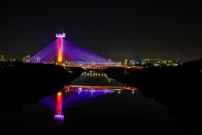
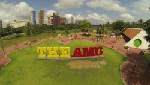
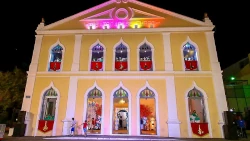
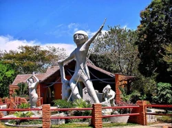
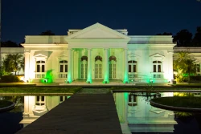
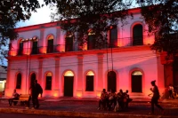

Brasil
Chamber of Commerce
Home
Directory
Join
Discover

Cable-stayed Bridge Viewpoint At Night

Potycabana Park

4th September Theatre

Chamber Gala Event

Evening Cityscape

Sunset at the Marina